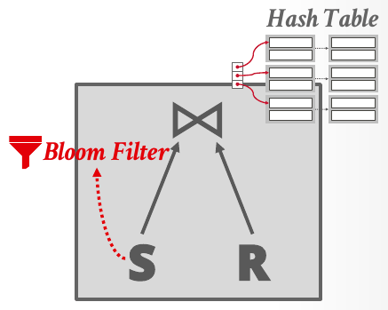
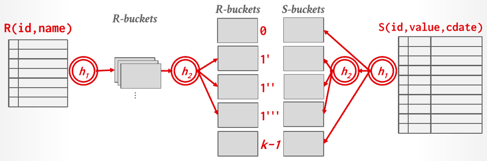
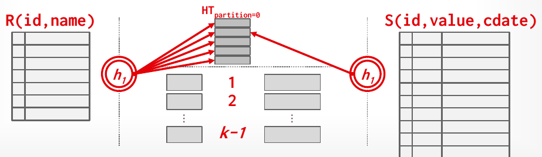
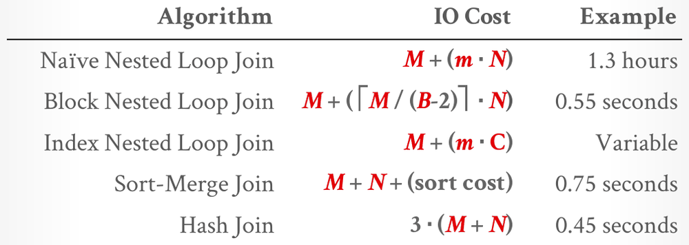

Database Internals in Go · Unit 5 · Lesson 4
Joins II: Hash Joins
Build and probe a hash join, partition both inputs with the Grace hash join when the hash table doesn't fit in memory, compute its 3(M + N) cost, and decide when a hash join beats the sort-merge and nested loop joins.
The last lesson's joins either compare every outer block with the whole inner table or sort both tables first. A hash join does neither: it puts one input into a hash table keyed on the join attributes, so each tuple of the other input only has to look in one place. When the hash table is too big for memory, the Grace hash join partitions both inputs the way Lesson 2's external hashing aggregate did, and joins one partition at a time. Lecture #12 calls hashing almost always better than sorting for operator execution, and the Project 3 writeup asks for a Grace hash join (its tests check results, not how the join partitions).
Unit 3, Lesson 6: a Bloom filter lookup for key x returns false. What does that tell you?
Unit 3, Lesson 2: in extendible hashing, a key arrives at a full bucket whose local depth equals the global depth. What happens?
Unit 5, Lesson 2: in phase 2 of the external hashing aggregate, why does the in-memory hash table use a second hash function h2 instead of h1?
Why hashing works for joins
Slide 33 gives the idea in three steps. If a tuple r in R and a tuple s in S satisfy the join condition, they have the same value for the join attributes. If that value hashes to partition i, r must be in R's partition ri and s in S's partition si. So the R tuples in ri only need to be compared with the S tuples in si, and every other comparison can be skipped.
The argument depends on equal values producing equal hashes, which is why the notes say hash joins can only be used for equi-joins on the complete join key. A condition such as R.a < S.b pairs tuples whose values differ, and those can land in any two partitions. A key over several columns works if the hash covers all of them: R.a = S.b AND R.c = S.d hashes (a, c) on one side and (b, d) on the other.
Simple hash join
The simple hash join has two phases:
- Phase 1, build: scan the outer relation and populate a hash table using a hash function h1 on the join attributes. Slide 34 says any hash table from Lecture #07 works, but in practice linear probing works best.
- Phase 2, probe: scan the inner relation, use h1 on each tuple's join attributes to jump to a location in the hash table, and find the matching tuples.
The table the hash table is built on is the build side; the table that is scanned to probe it is the probe side. In the lecture's algorithms the build side is the outer relation, R, and the probe side is the inner relation, S.

The notes fill in the details. The hash table's key is the join attributes. Its value is either the full tuple or a record ID, the early and late materialization choice again. Different keys can collide in a hash table, so a probe that lands on an entry must compare the original join values before it emits a match. If the DBMS knows the outer table's size, it can use a static hash table; if not, it must use a dynamic hash table, such as Unit 3's extendible hashing, or allow overflow pages.
A Go map keyed on the join key does the collision check for you: after hashing, it compares keys with ==. A hash table you build yourself, for example one that stores only a 64-bit hash of the key in a page, does not, and two different keys can share a hash. Then the probe must compare the actual join values, as the notes say. The build side can also contain duplicate keys, so each key maps to several tuples: in a map that is a slice of values per key, the "separate list of values" layout from Unit 3, Lesson 1.
Probe filters
Slide 36 adds an optimization. While building the hash table on the build side, the DBMS also creates a probe filter: a Bloom filter over the build side's keys. The probe side always checks the filter before it probes the hash table. That is faster than probing the hash table, because the filter fits in CPU cache, and because a Bloom filter never gives a false negative, a "no" from the filter lets the probe tuple skip the hash table entirely. The notes add that it can avoid disk reads that would not produce a match. Passing information from one side of the join to the other like this is sometimes called sideways information passing.

#12 Join Algorithms, "Basic hash join" (48:26), slides 33–36: why partitioning by hash works, build and probe, and the Bloom filter as a probe filter.
Grace hash join
Slide 37 asks what happens when there isn't enough memory for the whole hash table, and rules out the easy answer: the DBMS does not want the buffer pool manager to swap hash table pages out at random. Probes jump all over the table, so random paging would turn every probe into a possible disk read.
The partitioned hash join, also called the Grace hash join after the GRACE database machine built at the University of Tokyo in the 1980s, splits the work so that each piece fits:
- Partition phase: hash R into k buckets, and hash S into k buckets with the same hash function, writing the buckets to disk when they get full. Equal join values land in the same-numbered bucket on both sides.
- Probe phase: read the corresponding buckets into memory one partition at a time, and hash join their contents. The figure builds the in-memory table for each partition with a second hash function, h2.
The notes call the partition phase "build". The slides keep "build" for the simple hash join, and so does this lesson.

When a partition is still too big
Slide 41 covers two edge cases:
- If a partition still doesn't fit in memory after the first phase, the DBMS partitions it again, recursively, with a different hash function, repeating as needed, and finally joins the corresponding sub-partitions. This is recursive partitioning. Both sides must be split the same way.
- If a single join key has too many matching records to fit in memory, no hash function can split them, because they all have the same value. The DBMS uses a block nested loop join just for that key, which avoids random I/O in exchange for sequential I/O.

The cost
If no recursive partitioning is needed, the Grace hash join costs 3(M + N):
- The partition phase reads and writes both input tables: 2(M + N) I/Os.
- The probe phase reads both tables' buckets once, one partition at a time: M + N I/Os.
On the lecture's example database (M = 1000, N = 500) that is 3 × 1,500 = 4,500 I/Os: 3,000 for partitioning and 1,500 for probing.
Hybrid hash join
Slide 45 has one more optimization. If the buffer pool is larger than k, the hybrid hash join uses the additional pages to keep the first partition in memory and joins it during the first phase; all other partitions are spilled to disk as in the Grace hash join. The tuples of that partition are never written out and read back. The notes add that when the keys are skewed, the partition to keep in memory is the hot one, and that the hybrid join is difficult to implement correctly and rarely done in practice.

Build side and probe side
Slide 46 collects what decides whether a hash join works:
- The probe table can be any size. Only the build table, or its partitions, must fit in memory. The probe side is only streamed past the hash table.
- If the probe table fits entirely in memory, the DBMS can simply build the hash table on the probe side and scan the build side to probe it, with no partitioning at all.
- If the DBMS doesn't know the size in advance, it must use a dynamic hash table or allow overflow pages.
This is a different rule from the nested loop join's "buffer as much of the outer table as possible". The lecture builds on the outer table, so for a hash join the outer side is the one that must fit; saying "build side" and "probe side" avoids mixing the two rules up.
Comparing the join algorithms
Slide 47 puts every algorithm from this lesson and the last side by side.

Slide 48 concludes that hashing is almost always better than sorting for operator execution, with two caveats: sorting is better on non-uniform data, and sorting is better when the result needs to be sorted. Good DBMSs use either, or both. The previous lesson's slide 32 adds the case of inputs that are already sorted on the join key.
#12 Join Algorithms, "Partitioned hash join" (1:03:53), slides 37–48: the Grace hash join, recursive partitioning, the cost, the hybrid join, and the summary table.
What Project 3 builds
According to the Fall 2025 writeup and BusTub at d49b823:
- Project 3 asks for an inner join and a left join using the hash join algorithm from class. The output schema is the left table's columns followed by the right table's, as for the nested loop join. BusTub's hash join plan carries one list of key expressions for the left side and one for the right.
- The writeup warns that the hash table may not fit entirely in memory, so the implementation must follow the Grace hash join. You design the page format that holds the partitions on disk, and the writeup suggests reading the external merge sort task first, since the same intermediate-result page can serve both.
- The build side is a pipeline breaker: no probe can produce output until the whole build input has been read.
- An optimizer rule turns a nested loop join into a hash join when the join predicate is a conjunction of equi-conditions between two columns, with any number of them joined by AND. That matches the notes' rule that a hash join needs equality on the complete join key.
- For the optional leaderboard, the writeup recommends a Bloom filter for the hash table built in the build phase: the probe filter of slide 36.
Work it out
-
What to think about
Which formula belongs to each algorithm? For the sort-merge join, how many passes does each table's sort need with 100 buffers?
The method
Block join: N + ⌈N / (B − 2)⌉ × O. Sort-merge join: the external sort cost of Y plus that of Z (both under the two-pass limit of 9,900 pages), plus N + O for the merge. Grace hash join: 3(N + O).
The result
Block join: 500 + 6 × 3,000 = 18,500. Sort-merge join: 2,000 + 12,000 + 3,500 = 17,500. Grace hash join: 3 × 3,500 = 10,500. The hash join wins. If the partition phase uses one output buffer per partition, as Lesson 2's did, up to 99 partitions are possible, and Y's would average about 5 pages each, which fit easily in memory.
The homework behind these questions
The questions marked HW4 come from CMU's Homework #4: Question 1, with the original figures. Work each one out on paper first, then click the option you got. The quiz tells you at once whether it matches CMU's official answer, and explains why. To compare your working step by step, open the official solutions for Question 1.
Check your understanding
The first four questions come from HW4's Question 1. Its setup: B = 100 buffer pages; table X spans M = 1,000 pages and table Y spans N = 500 pages; relations X, Y and Z are joined on attribute a, with no indexes.
HW4 Q1(e): a hash join uses Y as the outer relation and X as the inner relation. Ignoring recursive partitioning and partially filled blocks, what is the cost of the partition and probe phases combined?
HW4 Q1(f): the tables don't fit in main memory, and a large number of distinct values hash to the same bucket under h1. Which approach works best?
HW4 Q1(g)iv: which statement about sort-merge join and hash join matches the official answer?
HW4 Q1(g)v: for a hash join to work, which input (or its partitions) needs to fit into memory?
For which join condition can the lecture's hash join algorithms be used directly?
Primary sources: CMU 15-445/645 Fall 2025 Lecture #12 slides 33–48 and notes (sections 5–6); Homework #4 Question 1, parts (e), (f) and (g), and its official solutions; the Project #3 writeup (HashJoin, optimizer and leaderboard sections); BusTub src/include/execution/plans/hash_join_plan.h at commit d49b823.